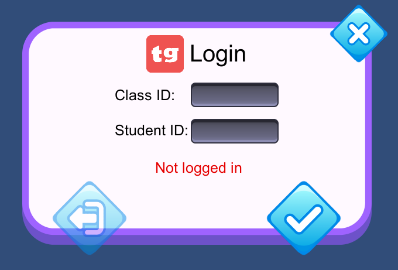
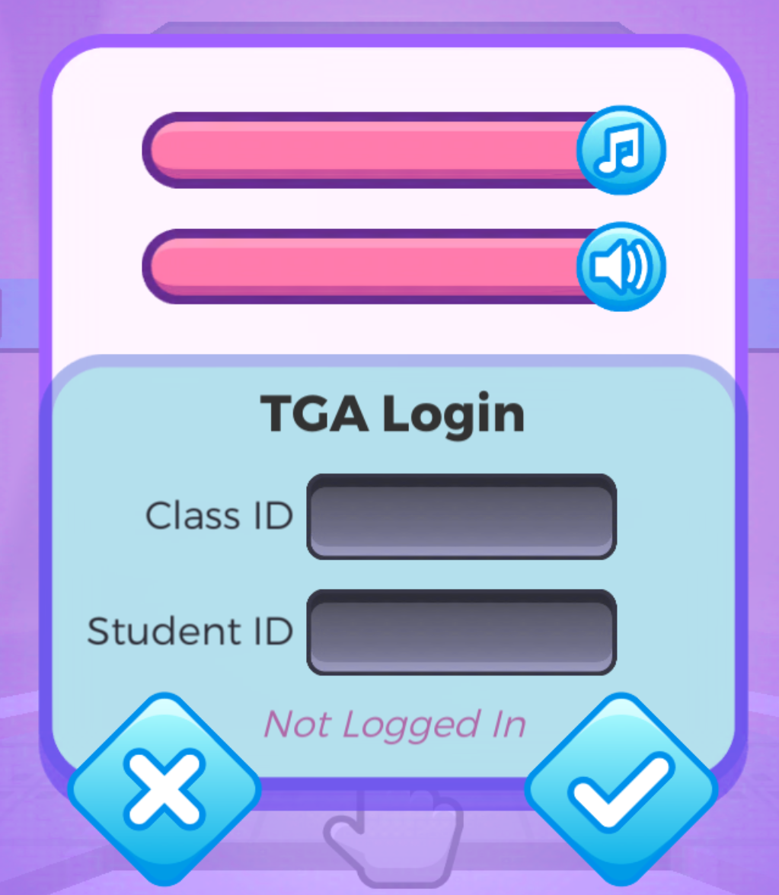
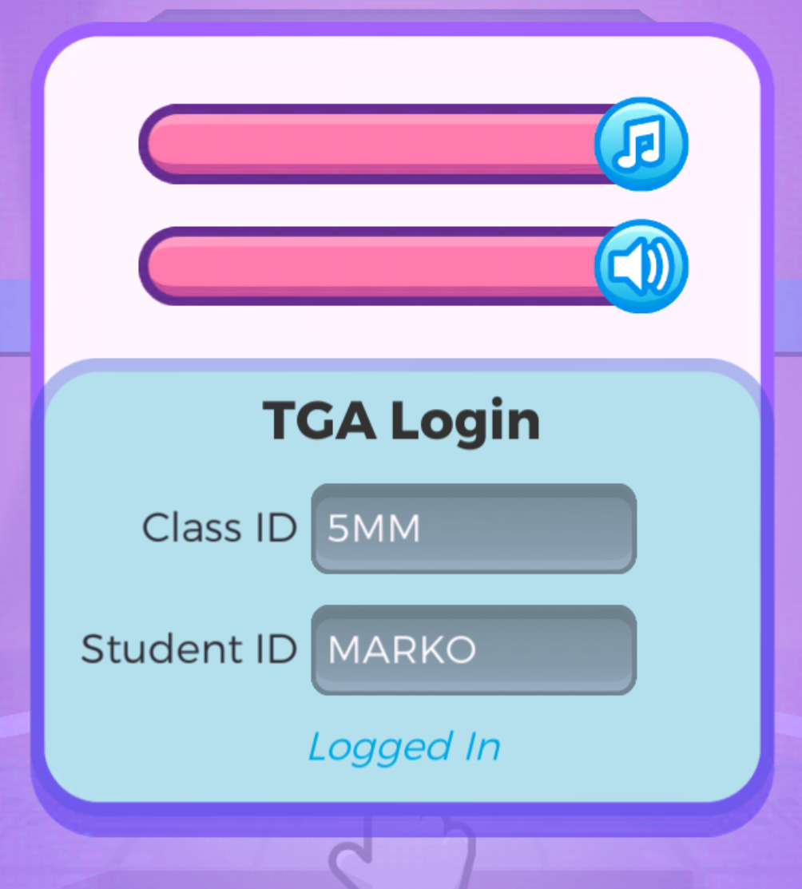
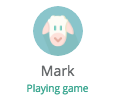
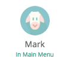
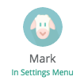
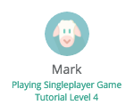
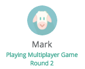
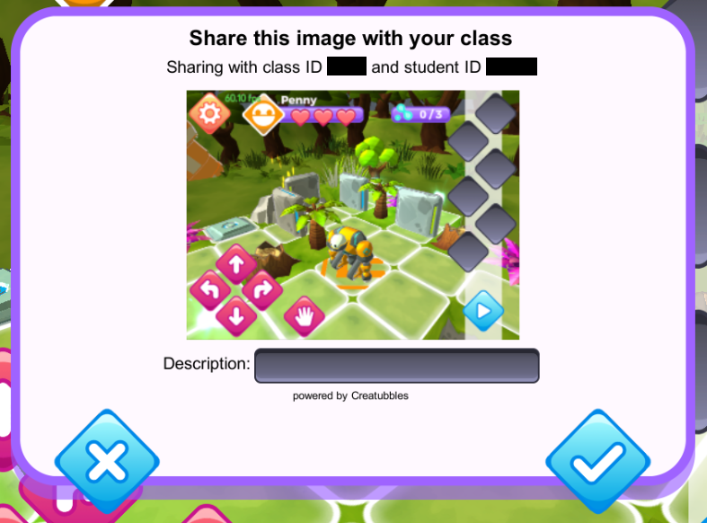

TeacherGaming Desk
The TeacherGaming Desk is a classroom toolbox designed to make game-based learning accessible to everyone. It combinines a portfolio of games with pedagogical support and real-time analytics.
From a technical point of view TeacherGaming Desk is made of three things.
- A web based platform ( https://desk.teachergaming.com ) for teachers, administrators and game developers called Teachergaming Desk that implements the following functionalities for its users.
- Teachers
- Lesson plans for using games in education
- Analytics information about student skill progress and real-time information about what students are doing in a game
- Managing students and classes
- Viewing screenshots and other creations students send to Creatubbles
- Administrators
- Manage subscriptions
- Manage teachers
- Developers
- Manage games and their information
- Define the analytics for a game by managing skills, events and activities
- Generate SDKs for games
- Create lessons for games
- Provide oAuth single sign on support for using the TeacherGaming Desk login in other web based applications
- Teachers
- TeacherGaming App (https://app.teachergaming.com/) that is installed on student devices.
- Download games
- Launch games
- with automatic TeacherGaming Desk student login
- The TeacherGaming android app can be viewed as a “Launcher” that is used to log into TeacherGaming Analytics platform and launch games that have been integrated into it. Logging in running the games with the TG app removes the need to log into every game separately.
- Games with TeacherGaming Desk integration
- Send analytics to TeacherGaming Desk
- Send screenshots and other creations to Creatubbles
General SDK Information
What is TGA SDK
TeacherGaming Desk, our learning platform, aims to demystify the processes behind game-based learning. It aims to provide educators with an easily understandable way of tracking and assessing the learning that happens in-game.
In more technical terms, the analytics part of TeacherGaming Desk is a web-based platform that collects analytics information (events) sent by games and processes it to reveal what the students (users, players) have learned while playing the game. The SDK for integrating the analytics is called TeacherGaming Desk Analytics SDK, or TGA SDK for short.
This part of the document is written for all game developers that are going to integrate TeacherGaming Desk analytics into their games. It describes how to do the integration on a general level. Integration can be done either by using a ready-made SDK for your platform, or by manually using the HTTP API. More detailed information is available in the specific parts for each SDK, easily accessed from the table of contents on the left.
Student id and Class id
Students are identified in TGA by their class and student ids. These are used instead of real names or similar in order to prevent outsiders (anyone except their teachers or parents etc.) from identifying individual students in the system. The class id is a system-wide unique generated alphanumeric identifier that identifies a group of students (usually a class). The student id is an alphanumeric identifier that is unique within a class, and is manually set either by a teacher in the web interface or by the student on first login if automatic generation of students has been allowed for that class.
TeacherGaming Desk analytics (TGA) requires the game to send a class id and a student id for each student playing the game to assign data to the right student. This means that students need to login before data can be sent, except for anonymous event data.
Logging in can be done through the TeacherGaming App or in the game. Implementing the automatic login through TeacherGaming App is mandatory, implementing an in-game login UI is optional. Our Unity C# SDK has a ready-made UI you can use if you are developing on Unity.
You should not save the class and student ids in your game. The student should need to login separately every time the app is started either through the TeacherGaming app or in the game UI.
Automatically logging in from TeacherGaming app
When the user has logged in to TeacherGaming app and launches your game the TeacherGaming app passes the login information to your game to allow your game to log in automatically as it is lauched (or brought back to foreground). On Android this is done by using Intent (when app is not already running) and Broadcast (when app is running) parameters. On iOS this is done using an URI scheme. We are planning to change Android to also use the URL scheme in the future, so all new integrations on Android should support that. Support for Intent & Broadcast is also needed since the TeacherGaming App still currently uses those.
On desktop platforms we pass the login information to the game as command line parameters.
The SDKs do the handling of these parameters automatically. When using an SDK all you need to do is listen to a callback (see the platform specific SDK documentation for how to do this) and react appropriately. If you are using the HTTP API you need to do the parameter handling yourself (see the HTTP API documentation and TeacherGaming app Android Intent login documentation).
When the student has logged in via TeacherGaming app you should not give the user the option to logout or to login as different student inside the game. Changing the student should only be done via the TeacherGaming app in this case. It is good if you still have the UI to show the class and student ids but you can leave it out if you wish. This can be the same UI you use to login inside the game just having the input fields and buttons in a disabled state disabled for example.
Testing automatic login through TeacherGamning App
- Search for app called TeacherGaming on Play or App store. Install the app and launch it.
- Press “LOGIN TO ANALYTICS” button at the top of the screen
- Tap 10 times TG logo at the top of the screen and a new menu will appear
- In the new menu input your game’s package name and class id and student id
- Press “Launch” Your game should now run and a popup should inform you about the login result.
Testing automatic login on mobile without TeacherGaming app
URI:
<your bundle identifier>://?classid=<class id>&studentid=<student id>&command=<login/logout>
Example (in html file):
<a href = "com.fivemoreminutes.switchandglitch://?classid=h1xme&studentid=student1&command=login"> Login h1xme/student1 </a>
Create a html file with links according to the URI scheme or input the URI in the device browser address bar.
Testing automatic login on desktop without TeacherGaming app
Desktop command line examples:
“Switch & Glitch.exe” “com.fivemoreminutes.switchandglitch://?classid=h1xme&studentid=student1&command=login”
“Switch & Glitch.exe” “?classid=h1xme&studentid=student1&command=login”
On desktop platforms you should test the automatic login by giving the URI on the right as a command line parameter when starting your game.
Replace <your bundle identifier> with your bundle identifier (f.e. com.teachergaming.switchandglitch) <class id> with a class id and <student id> with a student id and choose login or logout as the command. Note that on desktop you can leave the <your bundle identifier>:// part out in case you don’t have a bundle identifier defined. You can also leave the classid=<class id>&studentid=<student id>& part out if you have logout as the command. Note that you should never leave out the ? character. Note that the parameter contains special characters, so remember to put it in “”.
Creating your own UI for in-game login
For manually logging in to TGA the student needs to be able to input a class id and a student id. A good place for this UI is for example in a settings menu, or somewhere in the main menu. Usually two input fields with OK and Cancel options is enough. You can also have a Logout button to logout of TGA. Both the class id and student id fields should be either lowercase or uppercase only, not mixed case. In the system the class id and student id are not case sensitive. Uppercase only can be used to make it easier for young children to type the ids.
Login UI examples
|
 Unity C# SDK built-in login UI |
 Switch & Glitch manual login |
 Switch & Glitch logged in via TeacherGaming app |
Save games, user profiles and tga login
If your game has different user profiles for different players, you should tie each tga login to a different user profile. Even if you don’t have user profiles otherwise, it is advisable to tie player progress to TGA login.
Note that when resuming the game and switching profiles, you should log the current user out and switch the profile. This can happen for example when user changes logged in user in TeacherGaming App and launches your game again and your game was already running in the background.
Sending events
Events are used to send specific information about a student’s actions in the game. Events and their parameters are defined in TeacherGaming Desk and the API for sending them is generated to the SDK. The events are designed in collaboration with the game developer and the event definitions are put into the TeacherGaming Desk system by TeacherGaming staff.
Events can have three types of parameters: strings, integers or booleans. Each event defined in TeacherGaming Desk will have its own class under TGASDKSomeGame.Event the functions of which you can use to send the event. In this section a general overview with pseudocode is given. See the platform specific SDK documentation for more detailed information on how to send the events.. You don’t need to check if the user is logged in to TGA before sending events. The SDK will automatically check inside the function calls for this.
Sending events with duration
// Tracking an event with duration
// Level Start
TGASDKSomeGame.Event.LevelCompleted.Start();
// Within level, when player gets score
TGASDK.SomeGame.Event.LevelCompleted.Score += 1
// At the end of the level
TGASDKSomeGame.Event.LevelCompleted.Send();
Our SDK can automatically count time for an event and append duration to sent data. You can modify any additional data inside the event before you send it. To start the event, call TGASDK.Event.<EventName>.Start(). You can gather all the needed data for the event before you send it using TGASDK.Event.<EventName>.Current.<DataParameter> To send the event, call TGASDK.Event.<EventName>.Send()
Sending events without duration
// Sending an event without tracking for duration
TGASDKSomeGame.Event.ItemCrafted.Send("item1");
If the event is something for which it does not make sense to track a duration you can call TGASDK.Event.<EventName>.Send(…) with event data as parameters to send the event directly.
Updating state
By default when user logs in, teacher will see in their dashboard state “Playing game” for that student. It is possible to update the state and detailed state for student for what they are currently doing in the game, like In main menu, Playing level 1, Playing Multiplayer, In Settings Menu. This allows teacher to see by glance in teacher dashboard what student is currently doing.
Updating state can be done using one of three function calls
- TGASDK.TGA.UpdateUserState(string state)
- This sets the state showing below student name in teacher dashboard. It also resets detailed state showing below this state, if there was any.
- TGASDK.TGA.UpdateUserState(string state, string detailedState)
- This sets the state showing below student name in teacher dashboard and detailed state below it.
- TGASDK.TGA.UpdateUserStateDetailedOnly(string stateDetailed)
- This sets the detailed state below main state and does not reset the main state. You can use this to for example update round numbers or other live data happening in current state of your game.
You can keep the state update calls in your game and don’t need to check if user is logged in to TGA, we will automatically check inside the function calls if player is currently logged in to TGA and send the state update only if so.
State examples
TGASDK.TGA.UpdateUserState("In Main Menu");
TGASDK.TGA.UpdateUserState("In Settings Menu");
TGASDK.TGA.UpdateUserState("Playing Singleplayer Game", "Tutorial Level 4");
// When game begun
TGASDK.TGA.UpdateUserState("Playing Multiplayer Game");
// When round changed
TGASDK.TGA.UpdateUserStateDetailedOnly("Round 2");
|  |  |  |  |  |
| Default state for logged-in student | Student is in main menu | Student is in settings menu | Student is playing singleplayer game, Tutorial Level 4 has been passed for detailed state | Student is playing multiplayer game, Round number is being passed to detailed state when round changes |
Unity C# SDK
General
This document describes the specifics of integrating TGA to your game using the TGA Unity C# SDK. For general integration information and links to other SDK documents see the general SDK instructions.
Requirements
Our current SDK requires Unity 4.0.0f7 or later. If you need an SDK for an earlier version of Unity please contact us.
First steps
- TeacherGaming will send you a .unitypackage with the latest SDK and assets.
- Import the package by selecting “Assets -> Import package -> Custom package” in Unity.
- Attach the SDK script to a GameObject that is not deleted during the game. The script is located in “TGAGameSpecific/” folder and is named TGASDK
.cs - Updating the SDK and assets can usually be done by simply importing new package and updated files will automatically be detected.
- If you are having problems and would like to try a complete reimport of the SDK, you can delete the following directories & files before importing the package
- TGA
- TGAGameSpecific
- StreamingAssets/TGA
- Plugins/Android/AndroidManifest.xml
- In older versions of the SDK you needed to manually attach the CreatubblesManager script to a GameObject. You no longer need to do this and should remove it if you have attached it previously.
- If you are having problems and would like to try a complete reimport of the SDK, you can delete the following directories & files before importing the package
Notes
Your game specific SDK file is called TGASDK
Student login
Logging in can be done through the TeacherGaming app or in game. If users authenticate in game you will need to add a menu where user can type in a classid and a studentid. Authentication must be done before data can be sent.
Automatically logging in with TeacherGaming App
// Automatically logging in with TeacherGaming App
// Login status delegate & event (in TGASDK.TGA)
public delegate void LoginStatusListener(bool isLoggedIn);
public static event LoginStatusListener OnLoginStatusChanged;
<!-- Assets/Plugins/Android/AndroidManifest.xml -->
<?xml version="1.0" encoding="utf-8"?>
<manifest xmlns:android="http://schemas.android.com/apk/res/android" package="com.unity3d.player">
<application android:icon="@drawable/app_icon" android:label="@string/app_name">
<activity android:name="com.unity3d.player.UnityPlayerActivity"
android:label="@string/app_name"
android:configChanges="fontScale|keyboard|keyboardHidden|locale|mnc|mcc|navigation|orientation|screenLayout|screenSize|smallestScreenSize|uiMode|touchscreen">
<intent-filter>
<action android:name="android.intent.action.MAIN" />
<category android:name="android.intent.category.LAUNCHER" />
</intent-filter>
</activity>
<activity android:name="com.teachergaming.tga.TGAAndroidUriSchemeActivity"
android:label="@string/app_name"
android:launchMode="singleTop">
<intent-filter>
<action android:name="android.intent.action.VIEW" />
<category android:name="android.intent.category.DEFAULT" />
<category android:name="android.intent.category.BROWSABLE" />
<data android:scheme="YOUR.BUNDLEIDENTIFIER.HERE" /> <!-- REPLACE WITH YOUR GAME'S ANDROID APP BUNDLE IDENTIFIER -->
</intent-filter>
</activity>
<receiver
android:name="com.teachergaming.tgareceiver.TGABroadcastReceiver"
android:enabled="true"
android:exported="true" >
<intent-filter>
<action android:name="com.teachergaming.com.TGAbroadcast" />
</intent-filter>
</receiver>
</application>
</manifest>
You can test automatic login using the following URI format
<your bundle identifier>://?classid=<class id>&studentid=<student id>&command=<login/logout>
Logging in via TeacherGaming App is automatically handled by the SDK. You can listen to the TGASDK.TGA.OnLoginStatusChanged C# event to get notified when the login status changes. The event gives you one boolean parameter that is true if a student logged in and false if the current student logged out. The event is implemented using the C# delegate & event system.
You can use the TGASDK.TGA.LoggedInExternally() to check if the user logged in using the TeacherGaming App.
Note for Android! In future versions of TeacherGaming App we are moving to use URI schemes to forward the login parameters to games on Android, like we already do on iOS. For this to work you need to specify your app’s bundle id for the com.teachergaming.tga.TGAAndroidUriSchemeActivity activity in the AndroidManifest.xml file in Assets/Plugins/Android.
On Android and iOS you can test the uri scheme login by creating a .html file with links according to the URI scheme and opening it in your device browser and clicking on the links.
On desktop platforms you should test the automatic login by giving the uri as a command line parameter when starting your game. See https://docs.google.com/document/d/1nEJ5EGwO6JxTTmJGixvxEcBb0VhpMN7sEfOjGHY4JkI/edit#heading=h.1u1ow8hobpr for details.
Built-in login menu
// Built-in login menu
// Using the built-in login menu
// First check that not already logged in externally
if (!TGASDK.TGA.LoggedInExternally())
{
// Then show the login UI
TGASDK.TGA.CreateLoginPanel();
}
The TGA Unity C# SDK can create a ready made UI that has all the authentication functionality built in. See the code example on the right on how to use it. A login dialog will be created that looks like this (without the blue background)
This dialog will inform user if the login failed or succeeded. As with login via TeacherGaming App you can listen to the TGASDK.TGA.OnLoginStatusChanged event to get notified when the login status changes.
Handling subscription required
You can define the compile time symbol TGA_SUBSCRIPTION_REQUIRED to make the login menu require a subscription. If the symbol is defined you cannot login if you don’t have an active subscription and you cannot close the login menu without logging in. Pressing X in the top-right corner will quit the application by calling Application.Quit(). You can also supply your own function for quitting as a parameter for TGASDK.TGA.CreateLoginPanel() for example if you need to bypass your Monobehaviour.OnApplicationQuit handler that calls Application.CancelQuit.
When TGA_SUBSCRIPTION_REQUIRED is defined you should show the login window when the game app is started (main menu or equivalent).
Custom login menu
// Custom login menu
// Logging in from code
// Create new Auth object and start authentication
TGASDK.TGA.TGAAuth tgaAuth = new TGASDK.TGA.TGAAuth(this, TGASDK.TGA.TGAAuth.AuthUser(classID, studentID));
// Wait for auth result
yield return tgaAuth.authResult;
if (tgaAuth.authResult.Equals("true"))
{
// Authentication succeeded (classid & studentid we’re correct)
}
else
{
// Authentication failed (classid & studentid we’re not correct)
}
Note: If a student has logged in externally (using TeacherGaming App) your custom login menu should not allow changing the login nor logging out. You can check if the user has logged in externally using TGASDK.TGA.LoggedInExternally(). It is recommended you still have the UI to show the class and student ids. This can be the same UI you use to login inside the game just having the input fields and buttons in a disabled state disabled for example.
If you choose to create your own login menu you need to pass the class id and student id to the auth process. From a Monobehaviour script you need to run a coroutine with the code on the right.
You can also listen to the TGASDK.TGA.OnLoginStatusChanged event to get notified when the login status changes.
Sending events
The events that have been defined in TeacherGaming Desk website are generated to the SDK and can be used to send data from the game to Desk. All the events have their own inner class inside TGA<yourgamename>.Event with a property for each event parameter and functions to start and send the event.
Sending events with duration
// This is an example with our game Switch N’ Glitch.
/// When the player enters a singleplayer level, in our StartGame() function
TGASDKSwitchGlitch.Event.SPLevelComplete.Start();
// And when the player has completed the level:
TGASDKSwitchGlitch.Event.SPLevelComplete.Current.LevelId = Client.UIActiveClient.LocalGame.GameBoard.PrefabPath;
TGASDKSwitchGlitch.Event.SPLevelComplete.Current.FailedCommandCount = player.failedTileCount;
TGASDKSwitchGlitch.Event.SPLevelComplete.Current.CommitCount = player.totalCommitCount;
TGASDKSwitchGlitch.Event.SPLevelComplete.Current.OptimalCommitsForLevel = Client.UIActiveClient.LocalGame.GameBoard.programExecutionsGoal;
TGASDKSwitchGlitch.Event.SPLevelComplete.Current.MetagelCollected = player.playerScore;
TGASDKSwitchGlitch.Event.SPLevelComplete.Send();
This is useful for events that have a clear start and end times and as such a duration. Our SDK can automatically count time from beginning to end and append duration to sent data. You can also modify any additional data inside the event before you send it.
To start an event, call TGASDK.Event.
Sending events without duration
// Sending an event without duration
// This example is from KerbalEdu
TGASDKKerbalEdu.Event.SituationChange.Send(FlightGlobals.ActiveVessel.mainBody.bodyName, FlightGlobals.ActiveVessel.situation.ToString(), (int)FlightGlobals.ActiveVessel.totalMass);
You can call TGASDK.Event.
Updating state
See 2.4. UPDATING STATE.
Updating state can be done using one of three function calls
TGASDK.TGA.UpdateUserState(string state)- This sets the state showing below student name in teacher dashboard. It also resets detailed state showing below this state, if there was any.
TGASDK.TGA.UpdateUserState(string state, string detailedState)- This sets the state showing below student name in teacher dashboard and detailed state below it.
TGASDK.TGA.UpdateUserStateDetailedOnly(string stateDetailed)- This sets the detailed state below main state and does not reset the main state. You can use this to for ex. Update round numbers or other live data happening in current state of your game.
You can keep the state update calls in your game and don’t need to check if user is logged in to TGA, we will automatically check inside the function calls if player is currently authenticated to TGA and send the state update only if so.
State examples
TGASDK.TGA.UpdateUserState("In Main Menu");
TGASDK.TGA.UpdateUserState("In Settings Menu");
TGASDK.TGA.UpdateUserState("Playing Singleplayer Game", "Tutorial Level 4");
// When game begun
TGASDK.TGA.UpdateUserState("Playing Multiplayer Game");
// When round changed
TGASDK.TGA.UpdateUserStateDetailedOnly("Round 2");
| Default state for logged-in student | Student is in main menu | Student is in settings menu | Student is playing singleplayer game, Tutorial Level 4 has been passed for detailed state | Student is playing multiplayer game, Round number is being passed to detailed state when round changes |
Creatubbles
Creatubbles integration can be used to take a screenshot of the game and send it to TGA and Creatubbles web page. To use this feature the user needs to be logged in to TGA and the CreatubblesManager script needs to be attached to a gameobject as explained in the FIRST STEPS section.
Usage
/// Creatubbles
TGASDK.TGA.ScreenShotToCreatubbles();
To send a screenshot to TGA you can simply call TGASDK.TGA.ScreenShotToCreatubbles(). This will take a screenshot and open a UI that shows you the image that would be sent and where you can enter a description for the screenshot. 
For example you can create a simple button to send the screenshot and show it in your in-game UI. There is a camera texture in the “TGA/Resources/Graphics/” folder that you can use with the button if you wish.
Getting information
General information
// General information
// Call example: TGASDK.TGA.IsUserLoggedIn()
// Login information
// Returns true if logged into TGA, otherwise false.
bool IsUserLoggedIn()
// Returns true if logged into TGA via broadcast (TGA App), otherwise false.
bool LoggedInExternally()
// Returns the student ID used for login.
string GetStudentId()
// Returns the class ID used for login.
string GetClassId()
Here (on the right) are some functions you can use to get status information about TGA. All of these are static functions of TGASDK.TGA.
Subscription information
// Subscription information
// Returns true if game subscription has expired, otherwise false.
bool SubscriptionExpired()
// Returns the message that should be shown to user if the subscription has expired
string SubscriptionExpiredMessage()
These functions can be used to query if there is a valid subscription for the game. For testing the subscription, there are these two classes: Class h1xme never has subscription expired. Class h1xjr always has subscription expired. Both of these classes have student self-signup enabled so user can login with any studentid for testing.
C++ SDK
General
This document describes the specifics of integrating Teachergaming Desk to your game using the TGA C++ SDK. For general integration information and links to other SDK documents see the general SDK information.
Requirements
Our current SDK requires a C++ compiler with C++ 11 support. It has been tested with Microsoft Visual (Studio) C++ 2015.
Optional: The SDK has builtin support for using libcurl (https://curl.haxx.se/libcurl/) or Unreal Engine’s HTTP functionality for implementing the needed HTTP requests. There is also an interface you can override to provide your own implementation if you can’t use either of those.
First Steps
// TGA SDK initialization examples
// Unreal Engine ------------
#include "TGAHTTPUnreal.hpp"
//...
std::vector<std::string> parameters;
// Get command line parameters
std::string cmdLine(TCHAR_TO_UTF8(*FCommandLine::Get()));
std::istringstream iss(cmdLine);
std::copy(std::istream_iterator<std::string>(iss),
std::istream_iterator<std::string>(),
std::back_inserter(parameters));
// Initialize TGA SDK
TGASDKMyGame::Init(new TGAHTTPUnreal(), parameters);
// --------------------------
// Using libcurl ------------
#include "TGAHTTPlibcurl.hpp"
//...
std::vector<std::string> parameters;
// Get parameters
if (argc > 1)
for (int i = 1; i < argc; ++i)
parameters.push_back(string(argv[i]));
// Initialize TGA SDK
TGASDKMyGame::Init(new TGAHTTPlibcurl(), parameters);
// --------------------------
// Using your own TGAHTTPImplementation implementation
#include "TGAHTTPForMyEngine.hpp"
//...
std::vector<std::string> parameters;
// Get parameters ...
// Initialize TGA SDK
TGASDKMyGame::Init(new TGAHTTPForMyEngine(), parameters);
// --------------------------
- TeacherGaming will send you a .zip package with the latest SDK and assets.
- Unzip to your location of choice (inside your project is ok).
- Inside the package you will find the tgasdk directory that contains the SDK header files (.hpp). Add it to your project’s include directories.
- TGA SDK is a header only library, so there are no source code files that need to be compiled nor library files that need to be linked. All code is in the header files.
- Prepare for making HTTP requests, choose one
- If using Unreal Engine, enable exceptions for your project (add
bEnableExceptions = true;to your ProjectName.Build.cs) - Install libcurl (https://curl.haxx.se/libcurl/) and add it to your project
- Implement
TGAHTTPImplementationyourself
- If using Unreal Engine, enable exceptions for your project (add
- Add a call to
TGASDK<yourgamenamehere>::Init(...)to your game’s initialization code.- As the first parameter, use one of these. Ownership is transferred to TGASDK.
new TGAHTTPUnreal()if using Unreal Engine- need to
#include "tgasdk/TGAHTTPUnreal.hpp"first
- need to
new TGAHTTPlibcurl()- need to
#include "tgasdk/TGAHTTPlibcurl.hpp"first
- need to
- an instance your own implementation of
TGAHTTPImplementation- #include your own implementation’s header
- As the second parameter give a list of the command line parameters your application was started with.
- As the first parameter, use one of these. Ownership is transferred to TGASDK.
- Add a call to
TGASDK<yourgamenamehere>::Cleanup()to your game’s cleanup code.
Notes
Your SDK file is called TGASDK<yourgamenamehere>.hpp. Class inside that file is called TGASDK<yourgamenamehere>. To improve readability, we have not added <yourgamenamehere> for each method call in this document, we are mentioning TGASDK and you should add your game name after each TGASDK call to make it correct.
Student Login
Logging in can be done through the TeacherGaming app or in game. If users authenticate in game you will need to add a menu where user can type in a classid and a studentid. Authentication must be done before data can be sent.
Automatically Logging in with TeacherGaming app
// You need to supply command line parameters to the initializer for automatic login to work
std::vector<std::string> parameters;
// Get command line parameters and insert them to the vector
TGASDKMyGame::Init(new TGAHTTPlibcurl(), parameters); <- supply the parameters as parameter
// You can listen to login/logout events by implementing the TGASDK::TGA::LoginStatusChangeListener interface
class MyClassThatListensToLoginStatusChanges : public TGASDK::TGA::LoginStatusChangeListener
{
public:
/// Override to listen for login status changes
virtual void OnLoginStatusChanged(bool loggedIn)
{
// If loggedIn is true, the student has just logged in, if false, logged out.
// NOTE! Calls to this function may (and usually do) happen in another thread.
};
void Initialize()
{
TGASDKMyGame::TGA::AddLoginStatusChangeListener(this);
};
void Destruct()
{
TGASDKMyGame::TGA::RemoveLoginStatusChangeListener(this);
};
};
For the automatic login system to work in the C++ SDK you need to supply the command line parameters when calling TGASDK<yourgamenamehere>::Init(...).
Logging in via TeacerhGaming App is automatically handled by the SDK. You can use TGASDK::TGA::AddLoginStatusChangeListener to add listeners (that implement TGASDK::LoginStatusChangeListener inteface) to get notified when the login status changes. The callback gives you one boolean parameter that is true if a student logged in and false if the current student logged out. Remember to call TGASDK::TGA::RemoveLoginStatusChangeListener before your listener is deleted. Note that the listener can be (and usually is) called in another thread.
You can use the TGASDK::TGA::LoggedInExternally() function to check if the user logged in using the TeacherGaming App.
You can test the automatic login by giving your game a command line parameter of the following format.
<your bundle identifier>://?classid=<class id>&studentid=<student id>&command=<login/logout>
Custom Login Menu
When the student has logged in via TG App, you should not give the user the option to logout or to login as a different student inside the game. Changing the student should only be done via the TG App in this case. It is good if you still have the UI to show the class and student ids. This can be the same UI you use to login inside the game just having the input fields and buttons in a disabled state disabled for example.
Here is an example of a TGA login UI (the built-in UI in the Unity SDK).
class LoginUI : public TGASDK::TGA::LoginStatusChangeListener
{
void LoginButtonPressed(const string& classId, const string& studentId)
{
TGASDK::TGA::LoginAsync(classId, studentId);
}
}
From your login menu you need to pass the class id and student id to the auth process. To do this simply call
static void TGASDK::TGA::LoginAsync(const std::string& classId, const std::string& studentId);
Calling this function will start the login process in a new thread. Use TGASDK::TGA::AddLoginStatusChangeListener to add listeners (that implement TGASDK::LoginStatusChangeListener inteface) to get notified when the login process has finished. The callback gives you one boolean parameter that is true if a student logged successfully and false if the login failed or if the student logged out. Remember to call TGASDK::TGA::RemoveLoginStatusChangeListener before your listener is deleted. Note that the listener can be (and usually is) called in another thread.
Sending Events
The events that have been defined in TGA website are generated to the SDK and can be used to send data from the game to TGA. All the events have their own inner class inside TGA<yourgamename>.Event with a member variable for each event parameter and functions to start and send the event.
Sending events with duration
// Start event
TGASDKMyGame::Event::MyEvent::Start();
...
// While event is going on update variables
TGASDKMyGame::Event::MyEvent::Current().countOfSomething += 5;
...
// Send event
TGASDKMyGame::Event::MyEvent::Send();
This is useful to start an event and send it to us when it’s ready. Our SDK automatically counts time from beginning to end and appends duration to sent data. You can also modify any additional data inside the event before you send it.
To start the event, call TGASDK::Event::<EventName>::Start()
Now you can gather all needed data for the event. You can change additional data inside the event before you send it. Any data for the started event can be changed using TGASDK::Event::<EventName>::Current().<datavariable>
To send the event, call TGASDK::Event::<EventName>::Send()
Sending events without duration
// Send an event immediately without tracking duration
TGASDKMyGame::Event::MyInstantaneousEvent::Send(5); // Event takes an integer parameter
You can call GASDK::Event::<EventName>::Send(...) with event data as parameters to send an event immediately, without tracking for duration.
Updating state
See 2.4. UPDATING STATE.
Updating state can be done using one of three function calls
TGASDK::TGA::UpdateUserState(const std::string& state)- This sets the state showing below student name in teacher dashboard. It also resets detailed state showing below this state, if there was any.
TGASDK::TGA::UpdateUserState(const std::string& state, const std::string& detailedState)- This sets the state showing below student name in teacher dashboard and detailed state below it.
TGASDK::TGA::UpdateUserStateDetailedOnly(const std::string& stateDetailed)- This sets the detailed state below main state and does not reset the main state. You can use this to for ex. Update round numbers or other live data happening in current state of your game.
You can keep the state update calls in your game and don’t need to check if user is logged in to TGA, we will automatically check inside the function calls if player is currently authenticated to TGA and send the state update only if so.
State examples
TGASDK::TGA::UpdateUserState("In Main Menu");
TGASDK::TGA::UpdateUserState("In Settings Menu");
TGASDK::TGA::UpdateUserState("Playing Singleplayer Game", "Tutorial Level 4");
// When game begun
TGASDK:::TGA:::UpdateUserState("Playing Multiplayer Game");
// When round changed
TGASDK::TGA::UpdateUserStateDetailedOnly("Round 2");
| Default state for logged-in student | Student is in main menu | Student is in settings menu | Student is playing singleplayer game, Tutorial Level 4 has been passed for detailed state | Student is playing multiplayer game, Round number is being passed to detailed state when round changes |
Getting information
General information
// General information
// Call example: TGASDK.TGA.IsUserLoggedIn()
// Login information
// Returns true if logged into TGA, otherwise false.
bool IsUserLoggedIn()
// Returns true if logged into TGA via broadcast (TGA App), otherwise false.
bool LoggedInExternally()
// Returns the student ID used for login.
string GetStudentId()
// Returns the class ID used for login.
string GetClassId()
Here (on the right) are some functions you can use to get status information about TGA. All of these are static functions of TGASDK::TGA.
Subscription information
// Subscription information
// Returns true if game subscription has expired, otherwise false.
bool SubscriptionExpired()
// Returns the message that should be shown to user if the subscription has expired
string SubscriptionExpiredMessage()
These functions can be used to query if there is a valid subscription for the game. For testing the subscription, there are these two classes: Class h1xme never has subscription expired. Class h1xjr always has subscription expired. Both of these classes have student self-signup enabled so user can login with any studentid for testing.
Android Java SDK
This document describes the specifics of integrating TeacherGaming Desk to your game using the TGA Android Java SDK. For general integration information and links to other SDK documents see the general SDK instructions.
First Steps
TeacherGaming will send you a TGASDK<gamename>.java file. Copy the TGASDK<gamename>.java file to your project’s src/com/teachergaming/tga folder. Updating the SDK can be done by simply replacing the old SDK file with new one.
Notes
Your SDK file is called TGASDK<gamename>.java. Class inside that file is called TGASDK<gamename>. To improve readability, we have not added <gamename> for each method call in this document, we are mentioning TGASDK and you should add your game name after each TGASDK call to make it correct.
Student Login
Automatically Logging in with TeacherGaming App
For the automatic login to work correctly you need to pass the intent received in your main activity’s onCreate function to the SDK by calling
TGASDKSwitchGlitch.TGA.HandleIntent(getIntent());
@Override
protected void onNewIntent(Intent intent) {
super.onNewIntent(intent);
setIntent(intent);
TGASDKSwitchGlitch.TGA.HandleIntent(intent);
}
You also need to override the onNewIntent function with the code on the right.
The Java Android SDK automatically handles broadcast logins via TG App. You can get notified about students logging in and logging out by implementing the TGASDK.TGA.AuthUserListener
interface and adding your listener using
TGASDK.TGA.AddAuthUserListener(AuthUserListener added)
Remember to also remove the listener using
TGASDK.TGA.RemoveAuthUserListener(AuthUserListener removed)
Manual Login
See 2.1.2. Creating your own UI for in-game login for information about manual login and guidelines for creating a login UI.
Validating Login
TGASDK.TGA.AuthUser(classID, studentID, listener);
Login can be authenticated with the code below and on the right.
TGASDK.TGA.AuthUser(classID, studentID, listener);
// Login listener interface
public interface AuthUserListener
{
void OnTGAAuthUserComplete(boolean authenticated);
}
// Override example
TGASDKTeacherGamingApp.TGA.AuthUser("test", "student1", new AuthUserListener() {
@Override
public void OnTGAAuthUserComplete(boolean authenticated) {
// Handle login here
System.out.println("LOGIN RESPONSE: " + authenticated);
}
});
Where classID and studentID are the class and student ID’s you want to login with, and listener implements the AuthUserListener interface to listen when the login has completed.
Sending Events
The events that have been defined in TGA website are generated to the SDK and can be used to send data from the game to TGA.
Sending Events with Duration
// Start event
TGASDKMyGame.Event.MyEvent.Start();
...
// While event is going on update variables
TGASDKMyGame.Event.MyEvent.Current().countOfSomething += 5;
...
// Send event
TGASDKMyGame.Event.MyEvent.Send();
This is useful for events that have a duration. You can start an event and then send it to TeacherGaming Desk when it ends. Our SDK automatically counts time from beginning to end and appends duration to sent data. You can also modify any additional data inside the event before you send it.
To start the event, call TGASDK.Event.<EventName>.Start()
After that you can gather all needed data for the event. You can change additional data inside the event before you send it. All data for the started event can be changed using TGASDK.Event.<EventName>.Current.<EventParameter> variables.
To send the event, call TGASDK.Event.<EventName>.Send()
Sending Events without Duration
// Send an event immediately without tracking duration
TGASDKMyGame.Event.MyInstantaneousEvent.Send(5); // Event takes an integer parameter
If event is something for which it does not make sense to track duration you can call TGASDK.Event.<EventName>.Send(...) with the event data as parameters to send the event directly.
Updating state
See 2.4. UPDATING STATE.
Updating state can be done using one of three function calls.
TGASDK.TGA.UpdateUserState(string state)- This sets the state showing below student name in teacher dashboard. It also resets detailed state showing below this state, if there was any.
TGASDK.TGA.UpdateUserState(string state, string detailedState)- This sets the state showing below student name in teacher dashboard and detailed state below it.
TGASDK.TGA.UpdateUserStateDetailedOnly(string stateDetailed)- This sets the detailed state below main state and does not reset the main state. You can use this to for ex. Update round numbers or other live data happening in current state of your game.
You can keep the state update calls in your game and don’t need to check if user is logged in to TGA, we will automatically check inside the function calls if player is currently authenticated to TGA and send the state update only if so.
State examples
TGASDK.TGA.UpdateUserState("In Main Menu");
TGASDK.TGA.UpdateUserState("In Settings Menu");
TGASDK.TGA.UpdateUserState("Playing Singleplayer Game", "Tutorial Level 4");
// When game begun
TGASDK.TGA.UpdateUserState("Playing Multiplayer Game");
// When round changed
TGASDK.TGA.UpdateUserStateDetailedOnly("Round 2");
| Default state for logged-in student | Student is in main menu | Student is in settings menu | Student is playing singleplayer game, Tutorial Level 4 has been passed for detailed state | Student is playing multiplayer game, Round number is being passed to detailed state when round changes |
Handling foreground - background transitions on android
On android you should call:
TGASDK.TGA.HandleApplicationToBackground()
when your application goes to background (for example in your Activity’s onStop()) and
TGASDK.TGA.HandleApplicationToForeground()
when your application returns to foreground. These stop and restart the thread sending keepalive status messages. If HandleApplicationToBackground is not called the thread will keep running and analytics will show the app as active even if it is on the background (for example when user has pressed home key).
Getting Data
// Login information
// Get logged in user class ID
TGASDK.TGA.getClassId()
// Get logged in user student ID
TGASDK.TGA.getStudentId()
// Logs user out of TGA.
TGASDK.TGA.Logout()
// Sets classid & studentid but skips authentication. Use with care.
TGASDK.TGA.SetTGAIds(studentId, classId)
// Creatubbles
// Returns true if teacher account is linked to creatubbles.
TGASDK.TGA.isCreatubblesLinked()
// Gets student creatubbles token, if available.
TGASDK.TGA.getCreatubblesToken()
// Gets creatubbles gallery ID where creation needs to be submitted.
TGASDK.TGA.getCreatubblesGalleryId()
There is some useful data you can get inside the TGASDK<gamename> class, like current logged in user class ID, studentID, if user is logged in or creatubbles tokens (if teacher account is linked to Creatubbles). On the right you can find the most useful ones (but you can also open the TGASDK<gamename>.java file and check the class TGA to find all variables and methods available).
Node.js SDK
Analytics sdk integration instructions for node.js based web applications.
First Steps
// Require example
var TG = require(“./TGASDK<gamename>.js”);
- TeacherGaming will send you a
TGASDK<gamename>.ziparchive. - Copy the following files to their respective folders:
- tgnodejs-client.min.js
- tgnodejs.min.css
- TGASDK
.js
- tgnodejs-client.min.js
- Link/require each file wherever you are going to use them
- Install the cookies node module with following command:
npm install cookies- You also need to require the cookies node module in the same file where your /tgapi route will exist
Student Login/Logout
As TeacherGaming Desk analytics (TGA) requires the game to send a Class ID and a Student ID for each user playing the game to assign data for right user, users need to login before data can be sent.
Logging in can be done through the TeacherGaming App (TG App) or in game. If users authenticate in game you will need to add a button which will open a login dialog.
Automatically Logging in with TG App
Example:
https://<origin>?classid=example&studentid=example
Client side of the SDK handles the automatic login completely so you don’t need to do anything else except ensure that client side code has been required on client side. TG App will send Class ID and Student ID as url parameters.
Manual Login/Logout
Manual login is secondary option for students that didn’t login through TG App. Client side code has a login dialog. You need to create a button that calls the following function when clicked:
TG.createDialog();
This will show up the dialog to user. It will show either login fields if user is not logged in or info page with logout button if user is logged in.
Validating login/logout
Server side of the SDK will validate login/logout and send it to TGA. You will however need to pass the login/logout parameters to the server side of the SDK through a route. You will also need to pass the response from the login/logout back to the client side inside the callback.
Route Example
Example is done in Meteor-framework.
Router.route('tgapi', function(req, res) {
var cookies = new Cookies(req, res);
TG[*action parameter*](*query parameters obj*, cookies, function(response) {
// WRITEHEAD
// SEND RESPONSE
});
});
Cookies
var cookies = new Cookies(req, res);
This SDK uses cookies node module to store credentials. These cookies will expire in 48hrs. To enable the cookies you need to create new cookies instance inside the tgapi/ and pass it to the functions. You need to pass the routes request and response to the cookies instance.
Client side
Client side will pass the Class ID and Student ID as url parameters to tgapi/ route which you will need to catch.
Client will send parameters from dialog to following url:
<origin>/tgapi?action=login&classid=<classid>&studentid=<studentid>
Sending Events (client only)
The events that have been defined in TGA website are generated to the SDK and can be used to send data from the game to TGA.
Sending Events with Duration
// Examples:
// Start:
TG.exampleEvent.start();
// Send:
TG.exampleEvent.send(param1, param2);
This is useful to start an event and send it to TeacherGaming Desk when it’s ready. Our SDK automatically counts time from beginning to end and appends duration to sent data. When sending the event you need to pass the needed parameters to the function, otherwise it will throw an error and no event will be sent.
To start the event, call TG.<EventName>.start()
Now you can gather all needed data for the event.
To send the event, call TG.<EventName>.send(*data parameters*)
Sending Events without Duration
If event is something which you cannot track duration of just call TG.<EventName>.send() with the parameters.
Updating State (client only)
See 2.4. UPDATING STATE.
Updating state can be done using the following function:
TG.updateState(“state”, detailed);
The detailed-parameter is a boolean.
If it is set to false, function sets the state showing below student name in teacher dashboard. It also resets detailed state showing below this state, if there was any.
If set to true, function sets the detailed state that shows below basic state
You can keep the state update calls in your game and don’t need to check if user is logged in to TGA, we will automatically check inside the function calls if player is currently authenticated to TGA and send the state update only if so.
State examples
TG.updateState("In Main Menu", false);
TG.updateState("In Settings Menu", false);
TG.updateState("Playing Singleplayer Game", false);
TG.updateState("Tutorial Level 4", true);
// When game begun
TG.updateState("Playing Multiplayer Game", false);
// When round changed
TG.updateState("Round 2", true);
| Default state for logged-in student | Student is in main menu | Student is in settings menu | Student is playing singleplayer game, Tutorial Level 4 has been passed for detailed state | Student is playing multiplayer game, Round number is being passed to detailed state when round changes |
Manual Integration and HTTP API
This document describes how to manually integrate your game with TeacherGaming Desk without using a ready-made SDK.
The document is divided into use cases. First we describe and give examples on how to handle automatic login e.g. login parameters coming in from the TeacherGaming App. After that we describe the HTTP API you can use to communicate with TeacherGaming Desk. When integrating with TeacherGaming Desk basically you just send data to our REST API through standard HTTPS calls. All data passed needs to be inside the GET query string. Note that for compatibility with special characters, you are always required to URL encode all data sent to our API.
In-game Flow
- User login
- Successful login needs to be done before any data can be sent to TeacherGaming Desk (except anonymous event data)
- Start calling playing game once every 60 seconds
- After login is successful. This will inform the TeacherGaming Desk system that the user is currently playing the game and the user can be tracked. Also the TeacherGaming Desk Teacher Dashboard shows that the user is currently playing the game.
- Update player state as it changes in game
- This information will be shown on the Teacher Dashboard on the TeacherGaming Desk website so that the Teacher can easily see what the students are currently doing in game.
- Send event data
- Events and the data in them have been set up on the TeacherGaming Desk website by TeacherGaming. This is the data that is needed to track student progress.
Student Login
Manual Authentication / Login
Login a student to our system. Class id is unique throughout the whole system and student id is unique throughout the class the user is in. Student id can be thought as an username and class id as a password.
HTTP Request
URL
https://analyticsdata.teachergaming.com/api/validate
Parameters
| Parameter | Default | Description |
|---|---|---|
| classid | TeacherGaming Desk Class ID | |
| studentid | TeacherGaming Desk studentid | |
| apikey | Your game’s API key |
response
{
"success": 1,
"message": "Student with this ID exists in this class.",
"responseCreatedAt": "2017-06-13T07:08:47.763Z",
"debug": {
"sent": "2017-03-15T12:05:35.722Z",
"container": "zo5jajsD99beDQyt7-pv0n"
},
"login_message": "Logged into class <classid> with studentid <studentid>",
"login_message_html": "Logged into class <b>classid</b> with studentid <b>studentid</b>",
"subscription": {
"subscription_expired": false,
"subscription_expired_message": "Your subscription has expired."
},
"student": {
"studentid": "<studentid>",
"studentid_unique": "<HashedUniqueStudentID>",
"created_account": false,
"teacher_creatubbles_linked": true
}
"class": {
"classid": "<classid>",
"classid_unique": "<HashedUniqueClassID>",
"allow_student_signup": true
},
"game_name": "<game’s name>"
}
| Key | Value |
|---|---|
| success | 1 for successful login, 0 for failed login |
| message | Detailed information about the login result. |
| debug | Debug information |
| responseCreatedAt | Datetime when reponse was created |
| login_message | login message that can be displayed to user on successful login |
| login_message_html | same as above but with html bold tags in id’s |
| subscription_expired | true if TeacherGaming Desk subscription is expired otherwise false |
| subscription_expired_message | Message that can be displayed to user if subscription has expired |
| student | studentid of the logged in student, SHA256 hash of this id, boolean of whether account was created and boolean of whether teacher has linked creatubbles |
| class | classid of the logged in student, SHA256 hash of this id and boolean of whether student self signup is allowed |
| game_name | name of the game student logged in |
Example usage
https://analyticsdata.teachergaming.com/api/validate?studentid=johndoe&classid=democlass&apikey=K8SaQRDsSFdFt5zFthTy
Authentication / Login through TeacherGaming App
To support automatic login you need to handle the login parameters being given to your game by the TeacherGaming App. On Android this is done by using Intent (when app is not already running) and Broadcast (when app is running) parameters. On iOS this is done using a URL scheme. We are planning to change both mobile platforms to use the URL scheme in the future. On desktop latforms the login parameters are passed as command line paramters when starting the game.
Intent Login
// Example code for handling the login intent from TeacherGaming App in an Android game.
// Example is in Unity and C# but you can adapt it for your language & engine.
// Intent login at App Start (Unity C# code)
// This function is run from a Start() in Monobehaviour.
private bool TryLoginFromAndroidIntent()
{
// Get the class, activity (context) and intent from unity android side
#if UNITY_ANDROID && !UNITY_EDITOR
AndroidJavaClass javaClass = new AndroidJavaClass("com.unity3d.player.UnityPlayer");
AndroidJavaObject context = javaClass.GetStatic<AndroidJavaObject>("currentActivity");
AndroidJavaObject intent = context.Call<AndroidJavaObject>("getIntent");
// Check if intent has TeacherGaming Desk login related extras
bool hasClassId = intent.Call<bool>("hasExtra", "TGA-classid");
bool hasStudentId = intent.Call<bool>("hasExtra", "TGA-studentid");
bool hasCommand = intent.Call<bool>("hasExtra", "TGA-command");
string command = "";
string classId = "";
string studentId = "";
if (hasCommand)
{
command = intent.Call<string>("getStringExtra", "TGA-command");
}
if (hasClassId && hasStudentId && (!hasCommand || command == "login"))
{
classId = intent.Call<string>("getStringExtra", "TGA-classid");
studentId = intent.Call<string>("getStringExtra", "TGA-studentid");
if (classId != "" && studentId != "" && classId != null && studentId != null &&
classId != "null" && studentId != "null")
{
// Got class id & student id & commanded to login. Start login process.
// CALL LOGIN CODE HERE
return true;
}
else
{
return false;
}
}
else
{
return false;
}
#else
return false;
#endif
}
Intent is an abstract description of an operation to be performed used in Android applications. Intent can also contain key value pair extras, which can be used to send data internally in app or externally to another app. For the case where the game is not running yet, the TeacherGaming App simply starts the app using an intent that contains the class id and student id as extras.
Keys and values used in TeacherGaming App intents
| Key | Value |
|---|---|
| TGA-classid | User’s Class ID. Not needed if not logging in. |
| TGA-studentid | User’s Student ID. Not needed if not logging in. |
| TGA-command | “login” or “logout” Do we login or logout. |
When using a TGA SDK all of this is handled automatically. However when there is no TGA SDK available for the engine you are using (and you are using the HTTP API directly) or you for some other reason need to implement this yourself you can refer to the examples on the right for help.
If you are unfamiliar with Android development and wish to know more about intents, please refer to the Android documentation: https://developer.android.com/reference/android/content/Intent.html
// Receiving broadcasts
// Unity C# code
void OnApplicationPause(bool paused)
{
AndroidJavaClass tgaReceiver = new AndroidJavaClass("com.teachergaming.tgareceiver.TGABroadcastReceiver");
tgaReceiver.CallStatic("createInstance");
// Get static variables from plugin
string receivedClassID = tgaReceiver.GetStatic<string>("classId");
string receivedStudentID = tgaReceiver.GetStatic<string>("studentId");
if (receivedClassID != null && receivedStudentID != null)
{
// login code here ...
}
}
// Android Java code for BroadcastReceiver
public class TGABroadcastReceiver extends BroadcastReceiver {
public static String classId;
public static String studentId;
public TGABroadcastReceiver() {
}
@Override
public void onReceive(Context context, Intent intent)
{
String receivedClassId = intent.getStringExtra("TGA-classid");
String receivedStudentId = intent.getStringExtra("TGA-studentid");
if (receivedClassId != null && receivedStudentId != null
&& receivedClassId.length() > 0 && receivedStudentId.length() > 0)
{
classId = receivedClassId;
studentId = receivedStudentId;
}
else
{
classId = null;
studentId = null;
}
}
}
<!--AndroidManifest for the receiver-->
<!--You need to add this part to your AndroidManifest.xml file to support the broadcast receiver:-->
<receiver
android:name=".TGABroadcastReceiver"
android:enabled="true"
android:exported="true">
<intent-filter>
<action android:name="com.teachergaming.com.TGAbroadcast" />
</intent-filter>
</receiver>
Broadcast login (while game is running)
When the game is running intents can be received via broadcast. Receiving broadcasts requires a BroadcastReceiver. Implementation may differ depending on the engine you are using for your game.
TGA Unity SDK uses an Android plugin for receiving broadcasts.
Testing with TeacherGaming App
- Install the app from google play: https://play.google.com/store/apps/details?id=com.teachergaming.com&hl=en (or search: TeacherGaming)
- Open the TeacherGaming Application on your device
- Press “Login to Analytics” button at the top of the screen
- Tap the laptop image 10 times at the top of the screen A new menu will open where you can input the following information:
- Your game package name, for example: com.FiveMoreMinutes.SwitchAndGlitch
- Class ID
- Student ID
- Press “Launch” and the TeacherGaming App will run your game and send given id’s to it.
Example URI scheme for testing login:
com.teachergaming.switchandglitch://?classid=5mm&userid=marko&command=login
On iOS the app is launched using the URI scheme
<your app bundle identifier>://?classid=<class id>&studentid=<student id>&command=<login/logout>
For how to handle URL schemes on iOS see the relevant documentation for your programming language/engine/platform.
Check class
Can be used to check if a class with a given class id exists in the system.
HTTP Request
URL
https://analyticsdata.teachergaming.com/api/check_class
Parameters
| Key | Value |
|---|---|
| apikey | Api key of your game |
| classid | TeacherGaming Desk class id |
Response
{
"success": 1,
"message": "Class check successfull, class found with this id.",
"responseCreatedAt": "2017-06-13T07:10:16.249Z",
"debug": {
"sent": "2017-03-15T12:05:35.722Z",
"container": "zo5jajsD99beDQyt7-pv0n"
},
"class": {
"classid": "<classid>",
"class_exists" : true,
"classid_unique": "<HashedUniqueClassID>"
},
}
| Key | Value |
|---|---|
| success | 1 for success, 0 for fail. |
| message | Detailed information about the result |
| debug | Debug information |
| responseCreatedAt | Datetime when reponse was created |
| class | Described in the following table |
| Key | Value |
|---|---|
| classid | The class id (same as the one given as parameter) |
| class_exists | True if class exists, false if not |
| classid_unique | Unique id of the class |
Example Usage
https://analyticsdata.teachergaming.com/api/check_class?classid=democlass&apikey=K8SaQRDsSFdFt5zFthTy
Playing Game (keep alive)
Inform TeacherGaming Desk that the user is currently logged in and playing. Send once every minute. If TeacherGaming Desk does not receive this request for 3 minutes it will deduce that the student has quit the game and log him out.
HTTP Request
URL
https://analyticsdata.teachergaming.com/api/playing_game
Parameters
| Key | Value |
|---|---|
| classid | TeacherGaming Desk class id |
| studentid | TeacherGaming Desk id of the student in the class |
| apikey | Api key of your game |
Response
{
"success": 1,
"message": "Student playtime added",
"responseCreatedAt": "2017-06-13T07:10:16.249Z",
"debug": {
"sent": "2017-03-15T12:05:35.722Z",
"container": "zo5jajsD99beDQyt7-pv0n"
},
"game_name": "<game’s name>",
"class": {
"classid": "<classid>",
"classid_unique": "<HashedUniqueClassID>"
},
"student": {
"studentid": "<studentid>",
"studentid_unique": "<HashedUniqueStudentID>"
}
}
| Key | Value |
|---|---|
| success | 1 for success, 0 for fail. |
| message | Detailed information about the result |
| debug | Debug information |
| responseCreatedAt | Datetime when reponse was created |
| game_name | Name of the game the student is logged in |
| student | studentid of the logged in student and SHA256 hash of this id |
| class | classid of the logged in student and SHA256 hash of this id |
Example Usage
https://analyticsdata.teachergaming.com/api/playing_game?studentid=johndoe&classid=democlass&apikey=K8SaQRDsSFdFt5zFthTy
Player State
Inform TeacherGaming Desk what the user is currently doing in game. Separate calls for State and Detailed State. For example: State = Playing Game, Detailed State = Level 1
HTTP Request
URL
https://analyticsdata.teachergaming.com/api/update_state
https://analyticsdata.teachergaming.com/api/update_state_detailed
Parameters
| Key | Value |
|---|---|
| classid | TeacherGaming Desk class id |
| studentid | TeacherGaming Desk id of the student in the class |
| apikey | Api key of your game |
| state | What the user is currently doing |
Response
{
"success": 1,
// IF CALLING STATE:
"message": "Student state updated to: <newstate>",
// IF CALLING DETAILED STATE:
"message": "Student detailed state updated to: <newdetailedstate>",
"responseCreatedAt": "2017-06-13T07:12:46.311Z",
"debug": {
"sent": "2017-03-15T12:05:35.722Z",
"container": "zo5jajsD99beDQyt7-pv0n"
},
"game_name": "<game’s name>",
// IF CALLING STATE:
"new_state": "<newstate>",
// IF CALLING DETAILED STATE:
"new_detailed_state": "<newstatedetailed>",
"class": {
"classid": "<classid>",
"classid_unique": "<HashedUniqueClassID>"
},
"student": {
"studentid": "<studentid>",
"studentid_unique": "<HashedUniqueStudentID>"
}
}
| Key | Value |
|---|---|
| success | 1 for success, 0 for fail. |
| message | Detailed information about the result + state sent to method |
| debug | Debug information |
| responseCreatedAt | Datetime when reponse was created |
| game_name | name of the game student logged in |
| new_state | |
| new_detailed_state | State that was sent to method in a more detailed form |
| student | studentid of the logged in student and SHA256 hash of this id |
| class | classid of the logged in student and SHA256 hash of this id |
Example Usage
https://analyticsdata.teachergaming.com/api/update_state?studentid=johndoe&classid=democlass&apikey=K8SaQRDsSFdFt5zFthTy&state=Playing game
https://analyticsdata.teachergaming.com/api/update_state_detailed?studentid=johndoe&classid=democlass&apikey=K8SaQRDsSFdFt5zFthTy&state=Level 1
Event Data
Send event data to TeacherGaming Desk. The events and needed data for your game can be seen on the Events page on the TeacherGaming Desk website. Event data can also be sent anonymously without classid or userid.
HTTP Request
URL
https://analyticsdata.teachergaming.com/api/track
or anonymous
https://analyticsanon.teachergaming.com/api/track
Parameters
Required
| Key | Value |
|---|---|
| apikey | Api key of your game |
| eventname | The event name that you are submitting data for. |
Optional
| Key | Value |
|---|---|
| classid | TeacherGaming Desk class id |
| studentid | TeacherGaming Desk id of the student in the class |
| duration | How long it took to complete the event in milliseconds. |
| Optional data | Optional event data for your event is passed in key=value pairs. This is the data that has been set by TeacherGaming for each Event that is tracked in your game Examples: levelID=JungleLevel3 Score=3 |
Response
{
"success": 1,
"message": "Event tracked succesfully.",
"responseCreatedAt": "2017-06-13T07:21:44.594Z",
"debug": {
"sent": "2017-03-15T12:05:35.722Z",
"container": "zo5jajsD99beDQyt7-pv0n"
},
"game_name": "<game’s name>",
"event": "<eventname>",
"student": {
"studentid": "<studentid>",
"studentid_unique": "<HashedUniqueStudentID>"
},
"class": {
"classid": "<classid>",
"classid_unique": "<HashedUniqueClassID>"
},
"data": {},
"duration": 0
}
| Key | Value |
|---|---|
| success | 1 for success, 0 for fail. |
| message | Detailed information about the result |
| debug | Debug information |
| responseCreatedAt | Datetime when reponse was created |
| game_name | name of the game student logged in |
| event | name of the event that is being tracked |
| student | studentid of the logged in student and SHA256 hash of this id |
| class | classid of the logged in student and SHA256 hash of this id |
| data | All of the additional data fields sent to method |
| duration | Duration of the event, sent to method |
Example Usage
This is the LevelComplete event in Switch & Glitch
https://analyticsdata.teachergaming.com/api/track?apikey=K8SaQRDsSFdFt5zFthTy&studentid=johndoe&classid=democlass&eventname=LevelComplete&GameType=Network&LevelId=Level1&TileCount=20&FailedTileCount=-1&SuccessTileCount=3&CommitCount=1&Score=101&duration=17389
Student Logout
You can allow student to log out of TeacherGaming Desk only if your game is not subscription based. Logging out stops all student specific interactions with TeacehrGaming Desk.
HTTP Request
URL
https://analyticsdata.teachergaming.com/api/logout_student
Parameters
| Key | Value |
|---|---|
| classid | TeacherGaming Desk class id |
| studentid | TeacherGaming Desk id of the student in the class |
| apikey | Api key of your game |
Response
{
"success": 1,
"message": "Student logged out",
"responseCreatedAt": "2017-06-13T06:56:25.169Z",
"debug": {
"sent": "2017-03-15T12:05:35.722Z",
"container": "zo5jajsD99beDQyt7-pv0n"
},
"game_name": "<game’s name>",
"class": {
"classid": "<classid>",
"classid_unique": "<HashedUniqueClassID>"
},
"student": {
"studentid": "<studentid>",
"studentid_unique": "<HashedUniqueStudentID>"
}
}
| Key | Value |
|---|---|
| success | 1 for success, 0 for fail. |
| message | Detailed information about the result |
| debug | Debug information |
| responseCreatedAt | Datetime when reponse was created |
| game_name | Name of the game student logged out of |
| student | studentid of the logged out student and SHA256 hash of this id |
| class | classid of the logged out student and SHA256 hash of this id |
Example Usage
https://analyticsdata.teachergaming.com/api/logout_student?studentid=johndoe&classid=democlass&apikey=K8SaQRDsSFdFt5zFthTy
oAuth
Desk works as oAuth 2 identity provider server. To gain access to these features, please contact us to get your client_id and client_secret generated for you.
In a nutshell:
- Request your
client_idandclient_secretfrom TeacherGaming - Redirect user to login URL as mentioned in section
Authorization - User gets redirected to your specified URL, you will get code as parameter. Call our
Tokenendpoint to exchange that code for access token - Verify that access token is correct and user is correct by calling our
Profileendpoint.
Authorization
We currently support authorization code flow. You will need to redirect the user to our request URL and pass the additional parameters.
Request Type
GET
Url
https://desk.teachergaming.com/api/oauth/authorize
Parameters
| Parameter | Description | Required |
|---|---|---|
| response_type | only code allowed for now. |
true |
| client_id | Your client_id. |
true |
| redirect_uri | URL where client gets redirected after succesfull login. These are whitelisted by Teachergaming. | true |
| student_login | Set to true to login as a student. No need to include this parameter if doing teacher login, or you can pass false. |
false |
| switch_teacher_student_login | Set to true to allow switching between teacher and student logins. |
false |
Response
// Example of address where user's browser gets redirected after succesfull login
https://yourRedirectUri.com?code=<yourcode>&is_teacher=<true|false>
After succesfull login, user will be redirected back to your redirect_uri with code in GET query parameter. Use this code to fetch the access token for the user as explained in section Token.
| Key | Value |
|---|---|
| code | Code that can be exchanged for access token. |
| is_teacher | True if logged in as a teacher, otherwise false. |
Token
This endpoint can be used to exchange oauth code with access token.
Request Type
GET
Url
https://analyticsdata.teachergaming.com/api/oauth/token
Parameters
| Parameter | Description | Required |
|---|---|---|
| grant_type | Set to authorization_code. Required by oAuth standard. |
true |
| code | Code you got from us in the Authorization section. |
true |
| redirect_uri | Exact same redirect_uri used in Authorization section. Do not include query parameters or any extra information to this. |
true |
| client_id | Your client_id. |
true |
| client_secret | Your client_secret. |
true |
Response
Example Success Output
{
"success": 1,
"message": "Token created succesfully.",
"responseCreatedAt": "2017-07-26T09:47:48.733Z",
"access_token": "<YourToken>",
"token_type": "bearer",
"expires_in": 0,
"service": "<ServiceName>"
}
Example Failed Output
{
"success": 0,
"message": "Code not found."
}
Returns back the token that can be used to access rest of oAuth endpoints.
| Key | Value |
|---|---|
| success | 1 for success, 0 for failure. |
| access_token | User’s access token. |
| token_type | Type of token. Currently only bearer. |
| expires_in | Time when token expires. 0 means token does not expire. |
| service | Your service’s name. |
User Profile
This endpoint returns information about the user. Requires valid token. This method is useful for verifying that the user information like email address is correct after getting token for a user.
Request Type
GET
Url
https://analyticsdata.teachergaming.com/api/oauth/profile
Parameters
| Parameter | Description | Required |
|---|---|---|
| access_token | User’s access token | true |
Response
Example Teacher Success Output
{
"success": 1,
"message": "Profile information fetched succesfully.",
"responseCreatedAt": "2017-07-26T09:51:01.858Z",
"isStudent": false,
"teacher": {
"first_name": "<first_name>",
"last_name": "<last_name>",
"email": "<email>",
"unique_id": "<unique_id>"
},
"institution": {},
"subscription": {
"active": false,
"expired": true
}
}
Example Student Success Output
{
"success": 1,
"message": "Profile information fetched succesfully.",
"responseCreatedAt": "2017-07-26T09:51:01.858Z",
"isStudent": true,
"student": {
"name": "<studentname>",
"studentid": "<studentid>",
"studentid_unique": "<studentid_unique>"
},
"class": {
"class_name": "<classname>",
"classid": "<classid>",
"classid_unique": "<classid_unique>"
},
"subscription": {
"active": true,
"expired": false
}
}
Example Failed Output
{
"success": 0,
"message": "Access token not found.",
"error": "invalid_request",
"error_description": "Access token not found."
}
| Key | Value | Role |
|---|---|---|
| success | 1 for success, 0 for failure. | both |
| isStudent | true if this user is student, false otherwise. | both |
| subscription | Information if user currently has active subscription | both |
| teacher | Information about the teacher | teacher |
| institution | Information about the institution user is part of. Can be empty if user is not part of any institution. | teacher |
| student | Information about the student | student |
| class | Information about class the student is part of | student |
Classes
This endpoint returns the classes and students assosicated with the authorized teacher. Requires valid token. This method is useful for example for creating accounts for the students in your game.
Request Type
GET
Url
https://analyticsdata.teachergaming.com/api/oauth/classes
Parameters
| Parameter | Description | Required |
|---|---|---|
| access_token | User’s access token. | true |
Response
Example Classes Success Output
{
"success": 1,
"message": "Teachers classes information fetched succesfully.",
"responseCreatedAt": "2017-08-28T14:43:51.572Z",
"debug": {
"container": "undefined",
"host": "Tietokone-PC"
},
"classes": [
{
"classid": "<classid>",
"classid_unique": "<uniqueclassid>",
"class_name": "<classname>",
"students": [
{
"studentid": "<studentid>",
"studentid_unique": "<unique_studentid>"
}
]
}
]
}
Example Failed Output
{
"success": 0,
"message": "Access token cannot be empty.",
"error": "invalid_request",
"error_description": "Access token cannot be empty."
}
| Key | Value |
|---|---|
| success | 1 for success, 0 for failure. |
| message | Information about the request (f.e. error message) |
| debug | Debug information |
| classes | Teacher’s classes (array of class json elements described below) |
Class element
| Key | Value |
|---|---|
| classid | Class id of the class. Student inputs this when logging in. |
| classid_unique | Unique id for the class. Can be used f.e. for databases. Does not change. |
| class_name | Name of the class |
| students | Students belonging to the class (array of class json elements described below) |
Student element
| Key | Value |
|---|---|
| studentid | Student id. Student inputs this and the class id when logging in. |
| studentid_unique | Unique id for the student. Can be used f.e. for databases. Does not change. |
Revoke Token
This endpoint can be used to revoke a token.
Request Type
GET
Url
https://analyticsdata.teachergaming.com/api/oauth/revoke
Parameters
| Parameter | Description | Required |
|---|---|---|
| access_token | User’s access token. | true |
Response
Example Success Output
{
"success": 1,
"message": "Token revoked succesfully.",
"responseCreatedAt": "2017-07-26T10:03:45.218Z"
}
Example Failed Output
{
"success": 0,
"message": "Access token not found.",
"error": "invalid_request",
"error_description": "Access token not found."
}
| Key | Value |
|---|---|
| success | 1 for success, 0 for failure. |